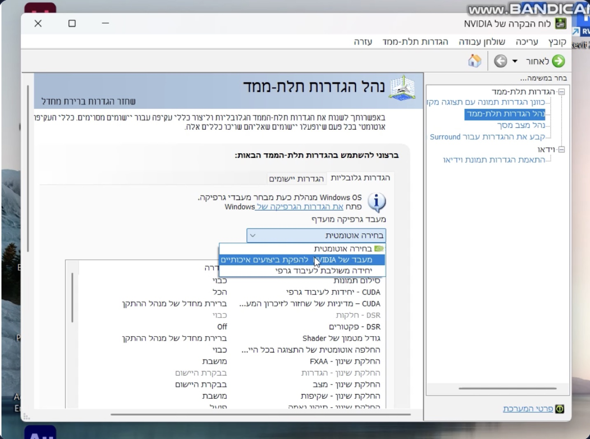
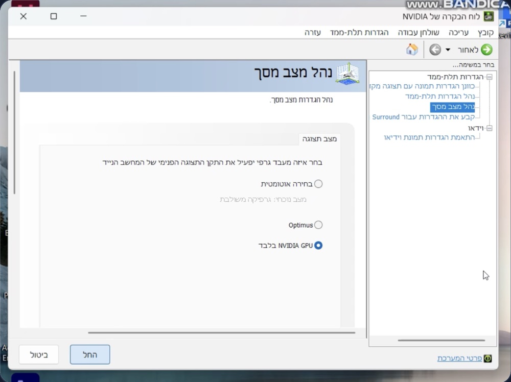

פתרון בעיות גרפיקה במחשבים ניידים
עם שני כרטיסי מסך
מדריך מסודר לייצוב עבודה בתוכנות גרפיות ותוכנות Autodesk (AutoCAD, Revit ועוד). מותאם למחשבי Lenovo LOQ ורלוונטי לרוב המחשבים הניידים עם כרטיס מסך כפול.
מה מקור הבעיה?
ברוב המחשבים הניידים המודרניים, ובכללם סדרת Lenovo LOQ, מותקנים שני כרטיסי מסך: כרטיס גרפי משולב במעבד (חסכוני), וכרטיס NVIDIA ייעודי (חזק). המחשב עובר ביניהם באופן אוטומטי כדי לחסוך בסוללה.
המעבר האוטומטי הזה, ובמיוחד בעת מעבר בין עבודה על סוללה לעבודה על חשמל, עלול לגרום לתקלות בתוכנות גרפיות מסוימות: קפיאות, ריצוד סמן, גרפיקה איטית או קריסות. במיוחד בתוכנות Autodesk.
חשוב להבין: זו אינה תקלה בחומרה של המחשב, אלא התנהגות מוכרת של מנגנון החלפת הכרטיסים, ואפשר לייצב אותה בעזרת ההגדרות שבמדריך.
חשוב לדעת: מחשבים ניידים עם כרטיס מסך חזק מיועדים לעבודה מקצועית בעיקר כשהם מחוברים לחשמל. על סוללה המחשב מגביל ביצועים באופן מכוון, ולכן בעבודה בתוכנות תכנון וגרפיקה מומלץ תמיד לעבוד עם המטען מחובר.
עדכון דרייבר כרטיס המסך של NVIDIA, גרסת Studio
השלב הראשון והחשוב ביותר הוא התקנת דרייבר עדכני. לתוכנות מקצועיות (Autodesk, Adobe וכד') מומלץ להתקין דווקא את דרייבר ה-Studio של NVIDIA: גרסה יציבה שנבדקה מול תוכנות יצירה ותכנון, ולא את גרסת ה-Game Ready.
- להורדת דרייבר Studio למחשבים ניידים (גרסה 616.92, ספטמבר 2026). גרסאות חדשות יותר תמיד בעמוד המדריכים והקבצים או באתר NVIDIA.
- בעת ההתקנה בחרו התקנה מותאמת אישית / Custom וסמנו התקנה נקייה / Clean Installation, כך הדרייבר הישן יוסר במלואו.
- בסיום ההתקנה יש להפעיל את המחשב מחדש.
קביעת כרטיס ה-NVIDIA ככרטיס המועדף
לחצו קליק ימני על שולחן העבודה ובחרו לוח הבקרה של NVIDIA (NVIDIA Control Panel).
נווטו אל: הגדרות תלת-ממד ← נהל הגדרות תלת-ממד ← הגדרות גלובליות
תחת "מעבד גרפיקה מועדף" בחרו: מעבד של NVIDIA להפקת ביצועים איכותיים ולחצו החל.

עבודה בלעדית על כרטיס ה-NVIDIA (ביטול ההחלפה האוטומטית)
באותו חלון, נווטו אל: הגדרות תלת-ממד ← נהל מצב מסך
בחרו באפשרות NVIDIA GPU בלבד ולחצו החל. הגדרה זו מבטלת לחלוטין את המעבר בין הכרטיסים, והתצוגה תופעל תמיד על ידי הכרטיס החזק.
שימו לב: ההגדרה מצריכה הפעלה מחדש של המחשב, וצריכת הסוללה תעלה. עוד סיבה לעבוד מחוברים לחשמל.

עדכוני BIOS וקושחת כרטיס המסך, דרך Lenovo Vantage
פתחו את תוכנת Lenovo Vantage המותקנת במחשב, היכנסו לאזור העדכונים (System Update) והתקינו את כל העדכונים המוצעים, כולל עדכוני BIOS ועדכוני קושחה לכרטיס המסך.
חשוב מאוד: תהליך העדכון עשוי לדרוש מספר הפעלות מחדש של המחשב. יש לבצע אותו אך ורק כשהמחשב מחובר לחשמל, ולא לכבות את המחשב באמצע התהליך.
מצב צריכת חשמל: "ביצועים גבוהים"
נווטו אל: הגדרות ← מערכת ← צריכת חשמל וסוללה ← מצב צריכת חשמל
קבעו את מצב צריכת החשמל על ביצועים גבוהים, גם במצב סוללה וגם בחיבור לשקע. אין להשאיר את המצב על "מאוזן", שכן הוא גורם למחשב להגביל את הכרטיס הגרפי ולעבור בין הכרטיסים.
התקלה ממשיכה?
נשמח לבצע את ההגדרות בשבילכם בתמיכה מרחוק, באישור שלכם.